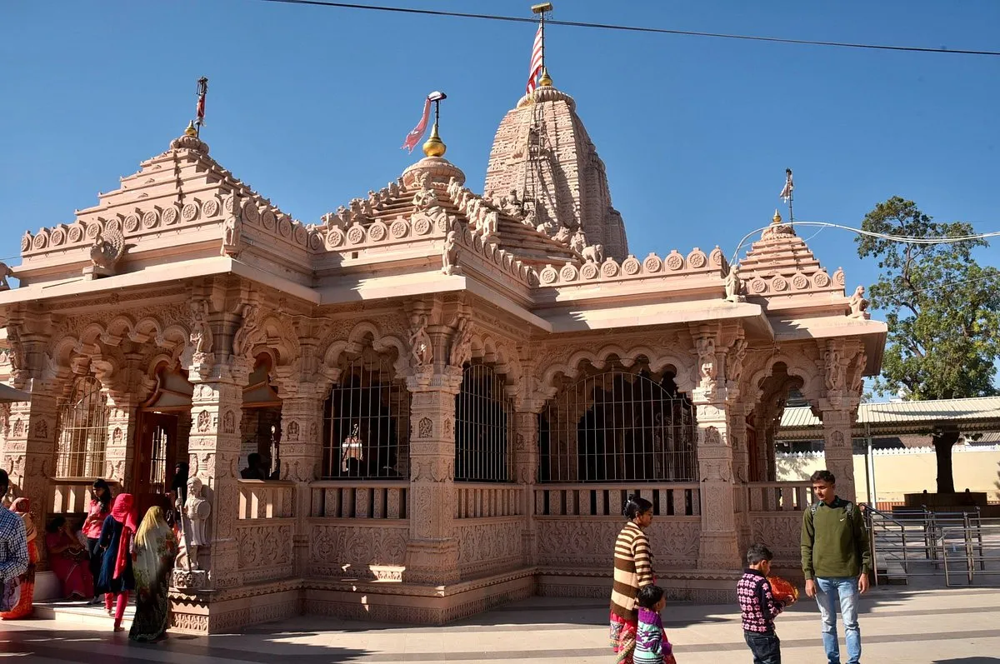
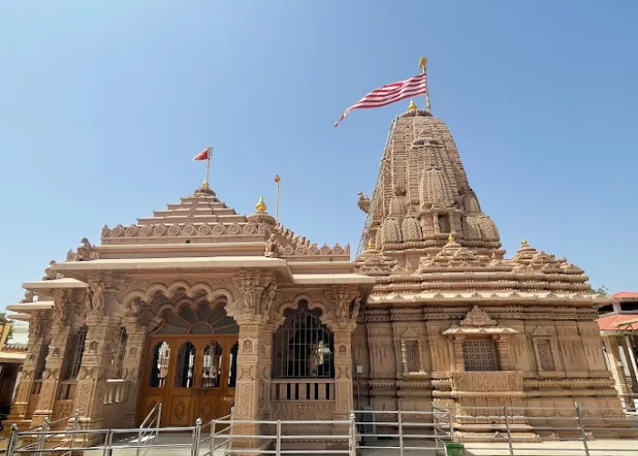
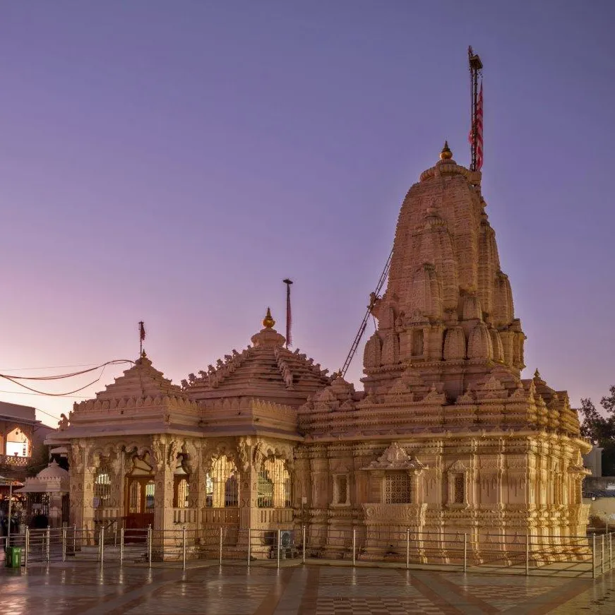
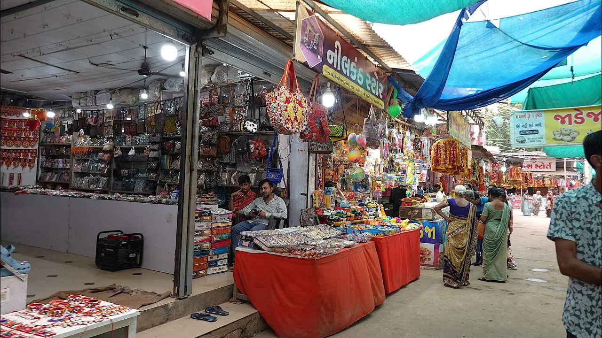
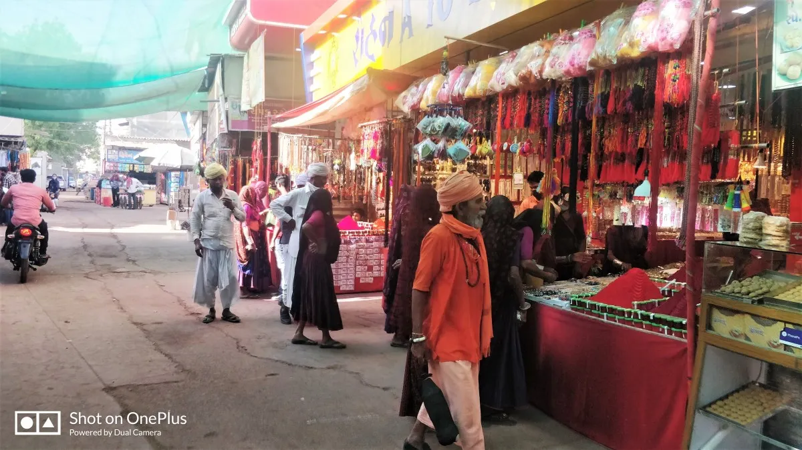
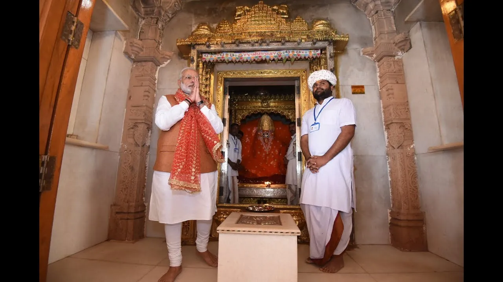

Mata na Madh is the most significant spiritual destination in Kutch, dedicated to Ashapura Mata, the Kuldevi (patron goddess) of the Jadeja rulers and the region. It is a place of immense faith where lakhs of devotees walk on foot during Navratri to pay their obeisance. The temple, with its soaring shikhara, stands as a symbol of Kutch's resilience and deep-rooted traditions.
Who Should Visit
- Devotees : To seek blessings of Ashapura Mata.
- Culture Enthusiasts : To witness the vibrant faith of Kutchis.
- Road Trippers : A key stop on the Bhuj-Lakhpat-Narayan Sarovar circuit.
How to Reach
- Devotees : To seek blessings of Ashapura Mata.
- Culture Enthusiasts : To witness the vibrant faith of Kutchis.
- Road Trippers : A key stop on the Bhuj-Lakhpat-Narayan Sarovar circuit.
Landmarks & Heritage
The defining monuments

Darshan & Aarti
(1 Hour) Attend the morning or evening Aarti which is spiritually uplifting.
Chachara Kund
(20 Mins) Visit the historic water tank nearby.
Hilltop View
Climb the small hillock for a view of the barren landscape and the temple complex.
Museum
(30 Mins) Small museum inside the complex showcasing Jadeja history.
Curated Local Advice
Crowds
Sundays and Tuesdays are crowded. Navratri is EXTREMELY crowded (Wait times can be 6-8 hours).
Shopping & Bazaars
- Check local guides for shopping.
Local Eats
- Sukhdi : Do not miss the 'Sukhdi' (Wheat & Jaggery sweet) Prasad. It's warm and delicious.
- Simple Food : Only vegetarian food available. Dining halls (Bhojanalayas) offer free/cheap meals.
When to Visit
Year Round: The temple is open all year. Winter is most comfortable. Navratri (Oct) is famous but crowded.
Nearby Places to Visit
Suggested Itinerary
Location & Gallery




